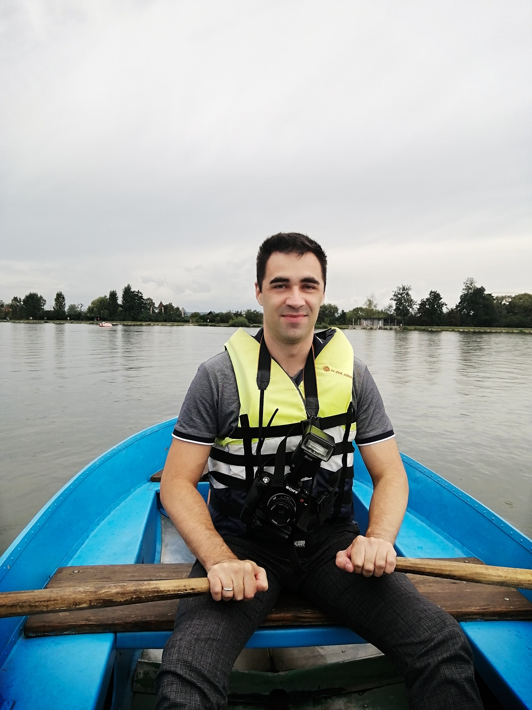

Олександр Векерик

Коротко про себе
Контакти
Досвід
-
Провідний інженер з підготовки виробництва
Leoni Wiring Systems UA GmbH
03/2021 - Теперішній час
- Робота з кресленнями в LDorado Design.
Підтримка креслень в актуальному стані.
- Підготовка мастер даних для виробничих тестів.
- Робота з даними з допомогою Excel, PowerQuery, VBA.
- Розробка програмних засобів для автоматизації як своїх робочих завдань, так і виробничих процесів.
-
Інженер з підготовки виробництва
Leoni Wiring Systems UA GmbH
04/2018 - 03/2021
-
Розкроювання заготовок одягу та розробка графіки для фотопозитивів для друку на одязі
Santissimo, Аргентина
- підготовка креслення для розкроювання та розкроювання деталей одягу
- розробка та друк фотопозитивів для подальшого виготовлення шаблонів шовкографії та друку на одязі
Освіта
Управління персоналом та економіка праці
Тернопільський національний економічний університет
2011
Магістр
Навички
- Робота з Microsoft Excel - просунутий рівень
- Microsoft PowerQuery - середній рівень
- Програмування у VBA - просунутий рівень
- Програмування у VB.NET - просунутий рівень
- Робота в LDorado Design - просунутий рівень
- Навички в 3D дизайні - середній рівень
- SQL - базовий рівень
Мови
- Англійська - вільне володіння
- Іспанська - середній рівень